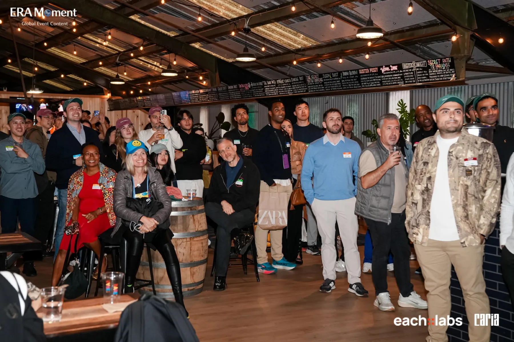
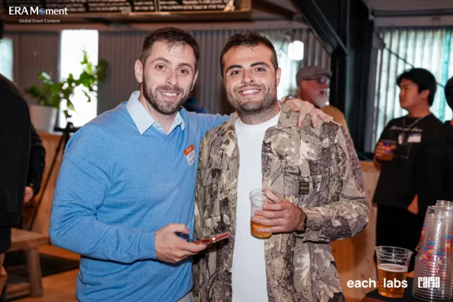
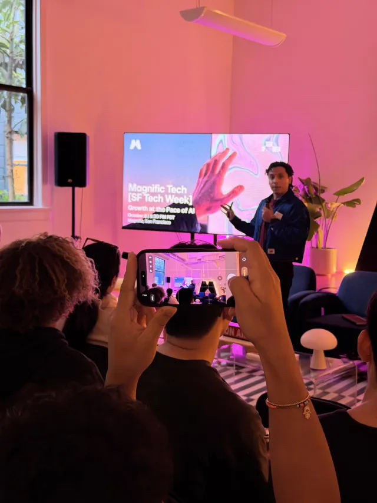
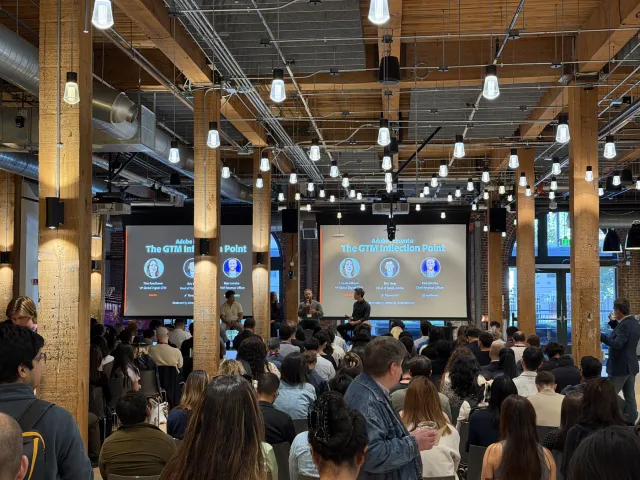
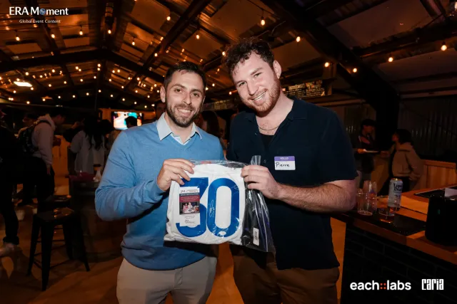
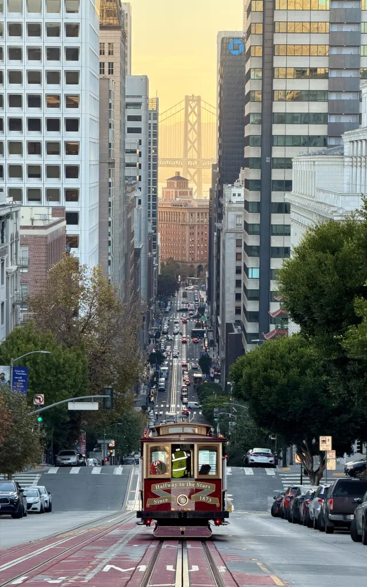
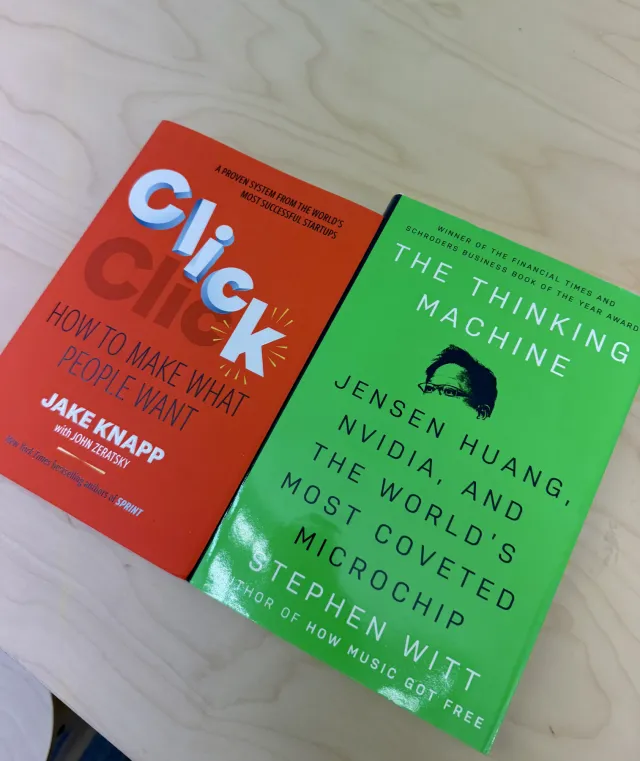
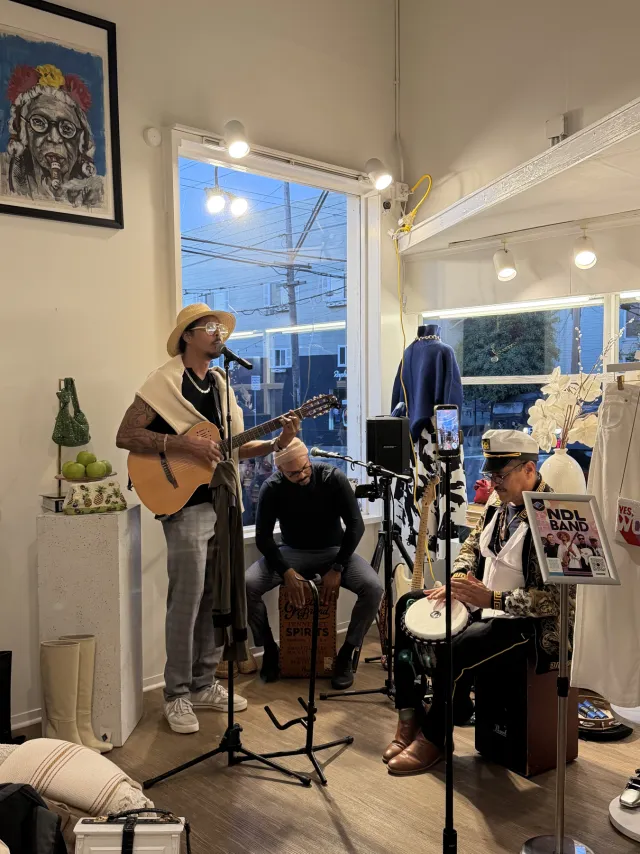

Field notes · AI infrastructure
San Francisco Tech Week
Specialized models, more demanding infrastructure, and a week of conversations about what it takes to ship AI products.


I spent a week in San Francisco for Tech Week and came back with one main feeling: I have a lot to catch up on. In the best way.
From our own Eachlabs event to Magnific, Adobe, Bria, fal, and a dozen smaller gatherings, the same themes kept coming up.
What kept coming up
-
01
Specialized models keep growing
The “one model to rule them all” story wasn’t what I saw people shipping. Image, video, audio, code, and agents each had their own leaders. The differences between them seemed to be widening, and choosing well mattered.
-
02
Use cases are outpacing evaluation
Everyone seemed to have more ideas than infrastructure. The possible uses were multiplying faster than teams could evaluate them, let alone build and operate them.
-
03
Infrastructure is getting more demanding
More providers, more modalities, more streaming, more fallbacks. I kept hearing variations of the same engineering problem: how to make all of this work together. Every serious team seemed to be building the same plumbing.
-
04
Harness and inference engineering have their own place
Two years ago these felt like side notes. This week they had their own talks, hires, and tooling. The engineering around the model was a recurring subject in its own right.
What I’m taking back to Eachlabs
My read is that things are consolidating around routing, tooling, and specialized models. Pick the right model for each task, route around failures, measure what happens, and make the plumbing invisible to the developer.
That’s the bet we’re making at Eachlabs. It was good to hear the same direction from people working through these problems a few steps ahead.
A few moments from the week
Great conversations, a few new friends, a jersey, the Blue Angels, and two books I’m now behind on: Click and The Thinking Machine. Click any photo to view it full size.















Thanks to everyone who came to our event, and to the teams who hosted us. Back to building.